ナイアガラオンザレイクサマーワインツアー
冬に参加したナイアガラオンザレイクのワイナリーツアーがとても楽しかったので、同じくNiagara Fun Toursからでているサマーワインツアーに参加してきた。
前回と同様、トロントからナイガラまではSafe Way Tourのカジノバスを利用。
バスが着くカジノ↓。ワインツアーのピックアップもここ。
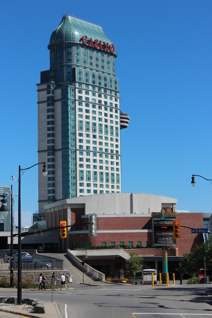7時40分にダウンタウンのCarlton ストリートにあるホテルHoliday Innを出発し、ナイアガラに着いたのは9時20分。10時40分のツアーのピックアップにはまだ時間がある、ということでＪ次郎のお待ちかね、カジノで運試し。
結果はスロットで５ドルだけ儲かった。
カジノ内でワゴンでサービスされるジュース類や水は無料でもらえる。せっかくなので、小さなウオーターボトルをもらっておく。ワイナリー巡りツアーに参加するにおいて、水は必携。特に夏はおもったより汗をかいていて、アルコールの利尿作用も加わって、脱水症状になりやすいのだ。
10時40分。お迎えのバスは、いつもはこのようなバス↓が来るはずが、
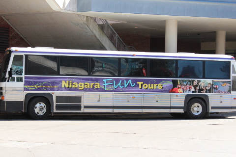前日になってバスが故障したため、来たのはスクールバス↓。
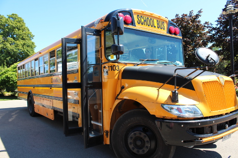中はこんな感じ↓。もちろん冷房なし。それほど暑い日でなくて良かった。気分はすっかり学校の遠足気分。
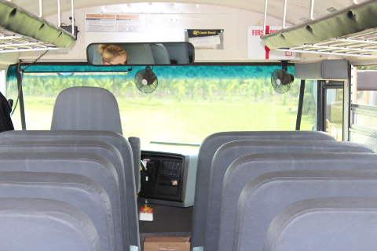1軒目のワイナリーはSTREWN。
ここのアイスワインはよく賞をとっているそう。そういえば、我が家にストックしてあるLCBOで買ったアイスワインもここのワイナリーのものだったっけ。
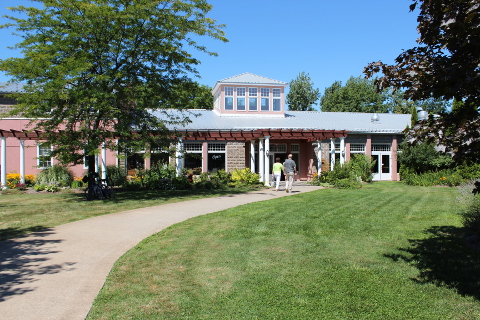 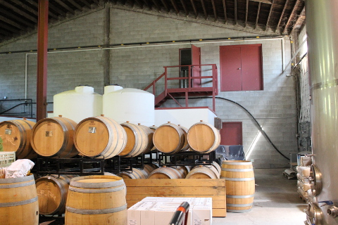貯蔵室に案内され、試飲したのは3種類、白のリースリングと赤のカべルネメルロー、オレンジの漬かったサングリア。
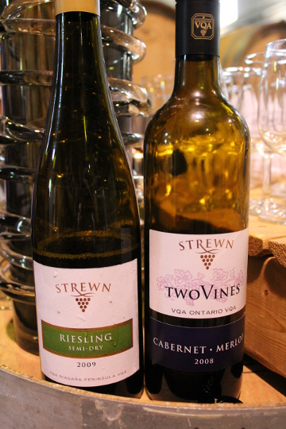↓ショップでレイトハーベストが格安で売られているのを発見！迷わず購入、したものの、、、
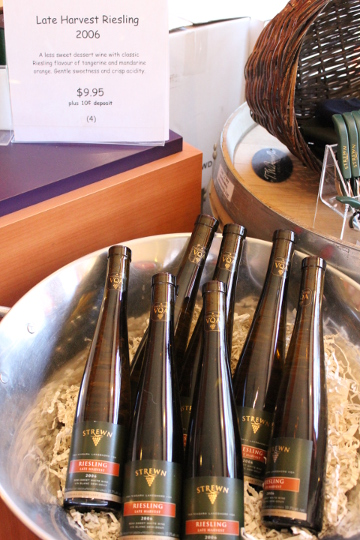後日飲んでみたら、劣化してしまったとおもわれる不良品だった。とても飲めたものではなかった。残念。値段に飛びついたのが悪かった。
2軒目はJoseph's Estate Wines。
 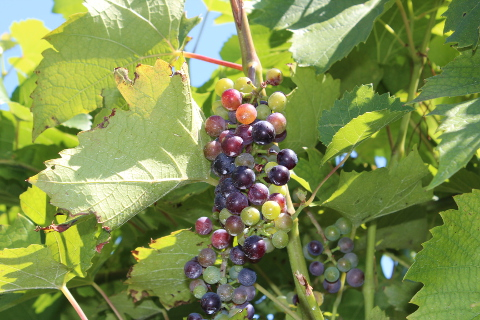
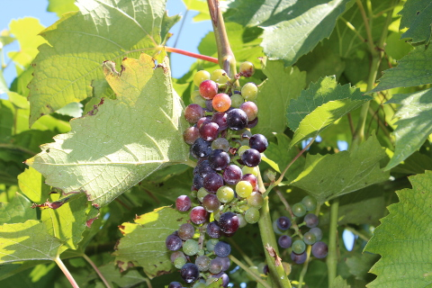
ワイン工場見学のはじまり。案内してくれたのはエレノアおばあちゃん。ご高齢だけど元気いっぱい。さすが元先生だけあって、説明や団体の引率がうまいこと。
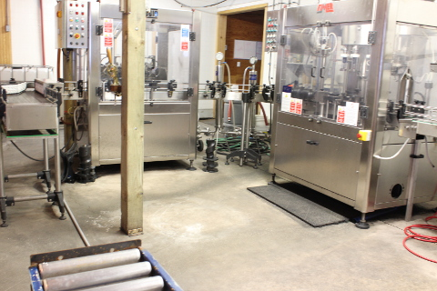エレノアさんご自慢の、ワイナリーの創始者である息子さんはドクターであり、科学者の一面ももつ。
健康に良いことに着目し、グレープシードオイルや、ブドウの皮から作られた粉も販売している。
アイスワインは賞の常連だそう。
お待ちかねの試飲は３種類。赤と白↓、
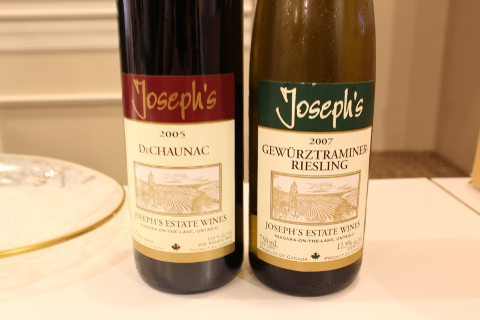 アイスワイン↓。 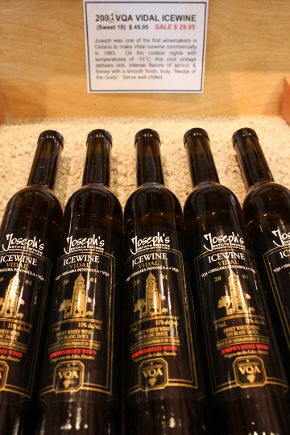アイスワインは賞の常連だそう。おいしかったけど、高いなあ、
とおもっていたら、その脇にウインターハーベストワインなるものを発見。
アイスワインよりぐっとリーズナブルな値段で楽しめるレイトハーベストはたまに買うのだけれど、ウインターハーベストは飲んだことない、ということで、値段もセールになっていたこともあって買ってみることに。
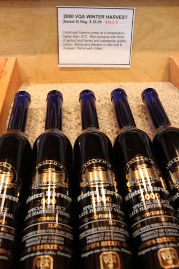後日飲んでみたところ、おもったよりおいしくなかった。期待しすぎたのか。
今回の教訓：値段に惑わされることなく、ワイナリーでは試飲しておいしかったのを購入すべき。バイヤーによる選定、買い付けがなされているＬＣＢＯとは違うのだな、ということを実感。
ランチタイムはココ↓で。
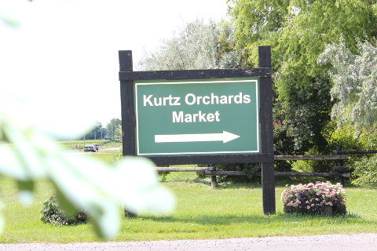 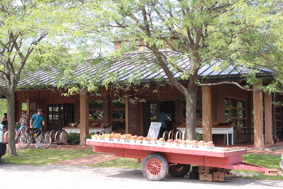サンドイッチやアイス、パンなどが買えるが、ユニークなジャム類が目白押し。フルーツだけではなく、野菜類のジャムがたくさん売られていて、それぞれ試食ができる。
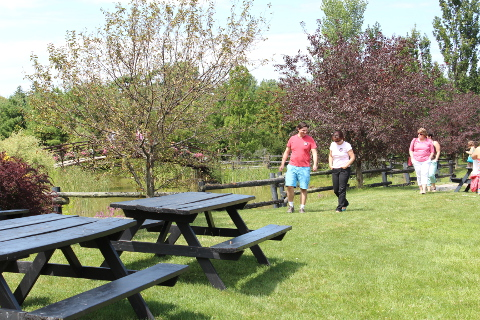私とＪ次郎はお店脇のピクニックエリアでお弁当タイム。
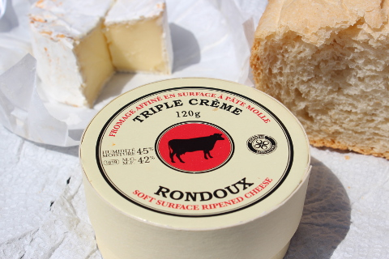3軒目のワイナリーはRiverview Estate Winery。
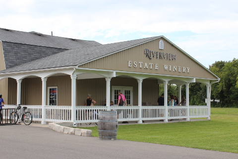裏手には一面に広がるブドウ畑が。
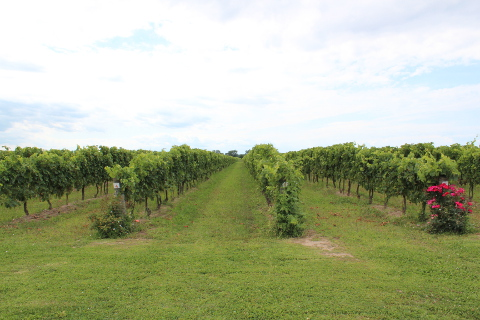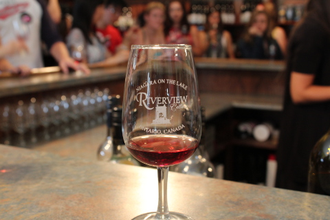
ここでは赤、白、ロゼの３種類の試飲。
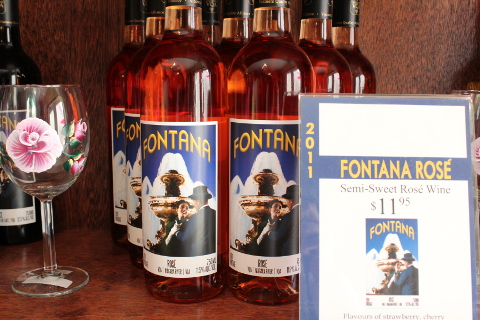Ｊ次郎は試飲したロゼ↑がとても気に入ってお買い上げ。
その後はこの日最後のワイナリー、Diamond Estate Wineryへ。
屋外で試飲スタート。
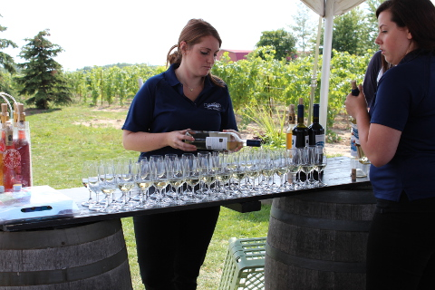白、赤、アイスワイン、赤のアイスワイン、スパークリングワイン、と盛りだくさん。
うれしいことに量も多めに注いでくれて大満足。
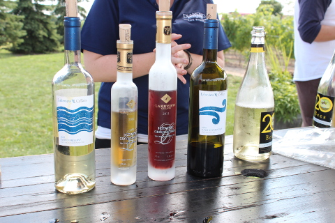珍しい赤のアイスワインがおいしかった。
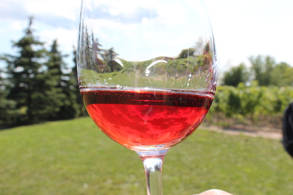今回もとても楽しいワイナリー巡りだった。
このツアーは10月27日までだそう。参加費はひとり８９ドルなのだけれど、今回、我が家でいまやご用達のBuytopiaにて二人で５９ドルという格安な値段で参加することができた。
＞＞＞buytopia（公式サイト）